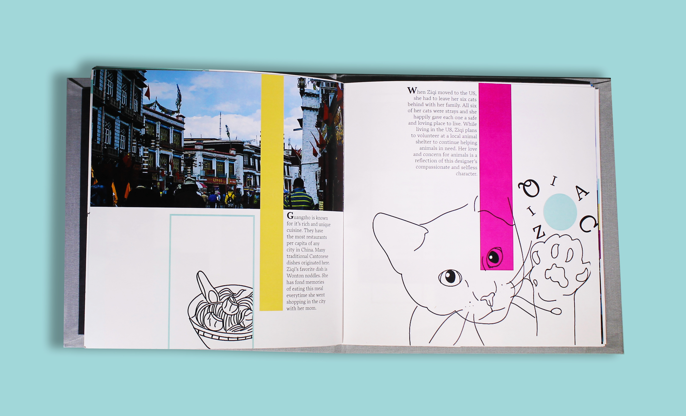
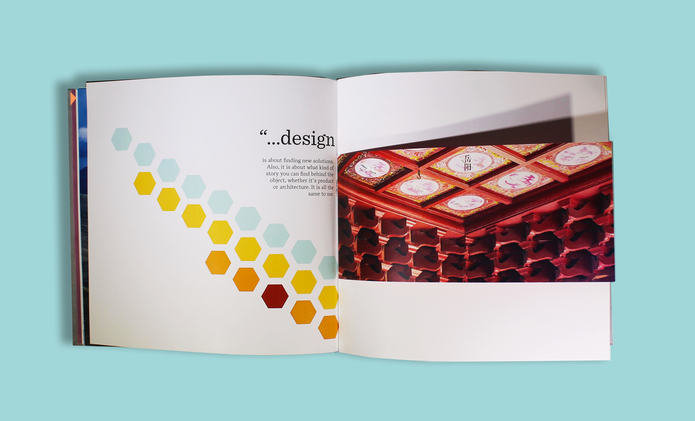
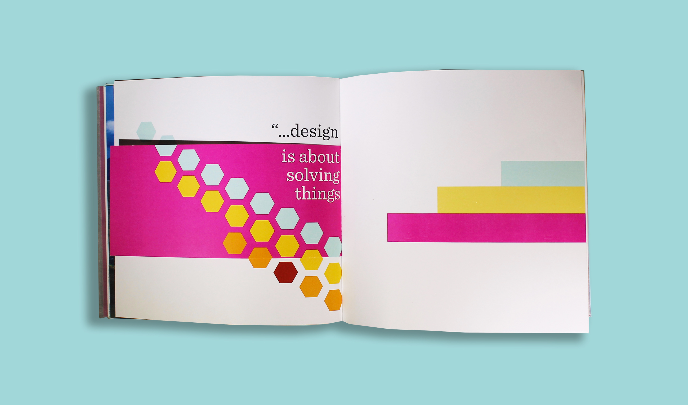
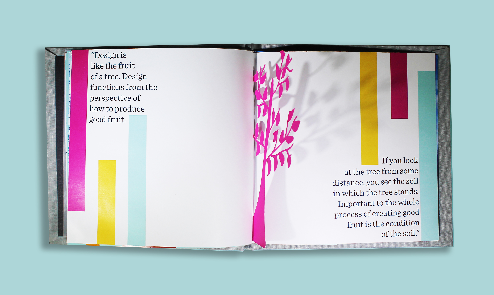
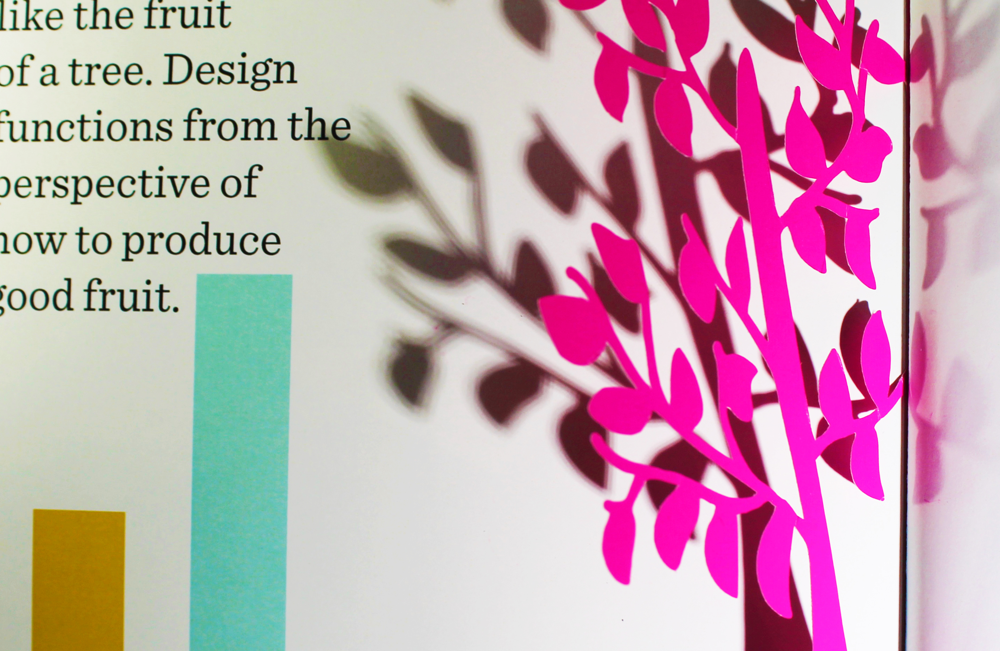

For this project, we had to design and create an editorial about one of our classmates. After interviewing my classmate, Ziqi, I learned that she admired simple Japanese design and took beautiful photographs. For my editorial, I decided to showcase Ziqi's photographs alongside simple line drawings and geometric elements. I wanted to tell Ziqi's story, while complementing her photographs. I then bound the book using a simple and elegant Japanese stab binding.